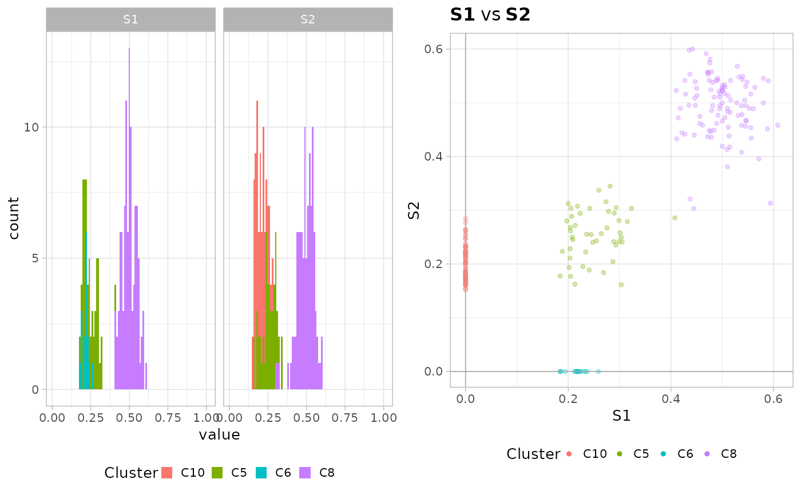

Performs a joint plot in which both the clustering scatter and the
marginal plots are repreoduced. This function uses the plot_2D and
plot_1D functions to create all the required plots, and the ellipsis
is used to forward parameters to both functions.
plot_fits(x, ...)A figure assembled with ggpubr.
data(fit_mvbmm_example)
plot_fits(fit_mvbmm_example)
#> Using cluster.Binomial as id variables
#> Warning: Removed 81 rows containing non-finite outside the scale range (`stat_bin()`).
#> Warning: Removed 12 rows containing missing values or values outside the scale range
#> (`geom_bar()`).

if (FALSE) { # \dontrun{
require(dplyr)
colors_clusters = fit_mvbmm_example$labels %>% unique %>% pull()
colors_clusters_samples = ggsci::pal_lancet()(colors_clusters %>% length())
names(colors_clusters_samples) = colors_clusters
plot_fits(fit_mvbmm_example, colors = colors_clusters_samples)
} # }